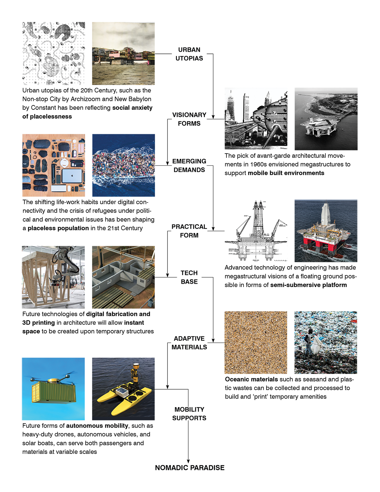
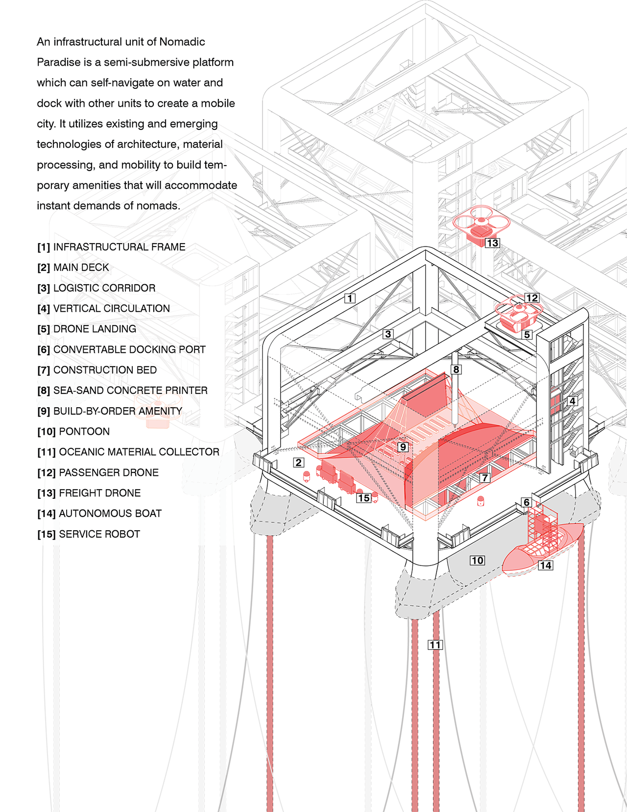
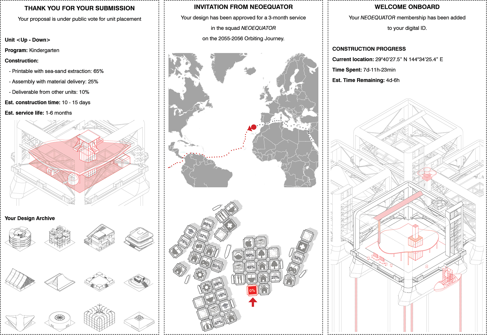
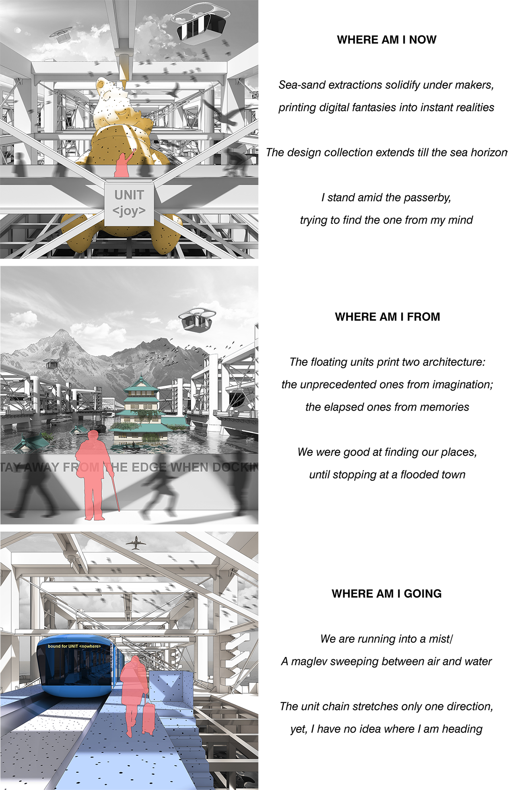
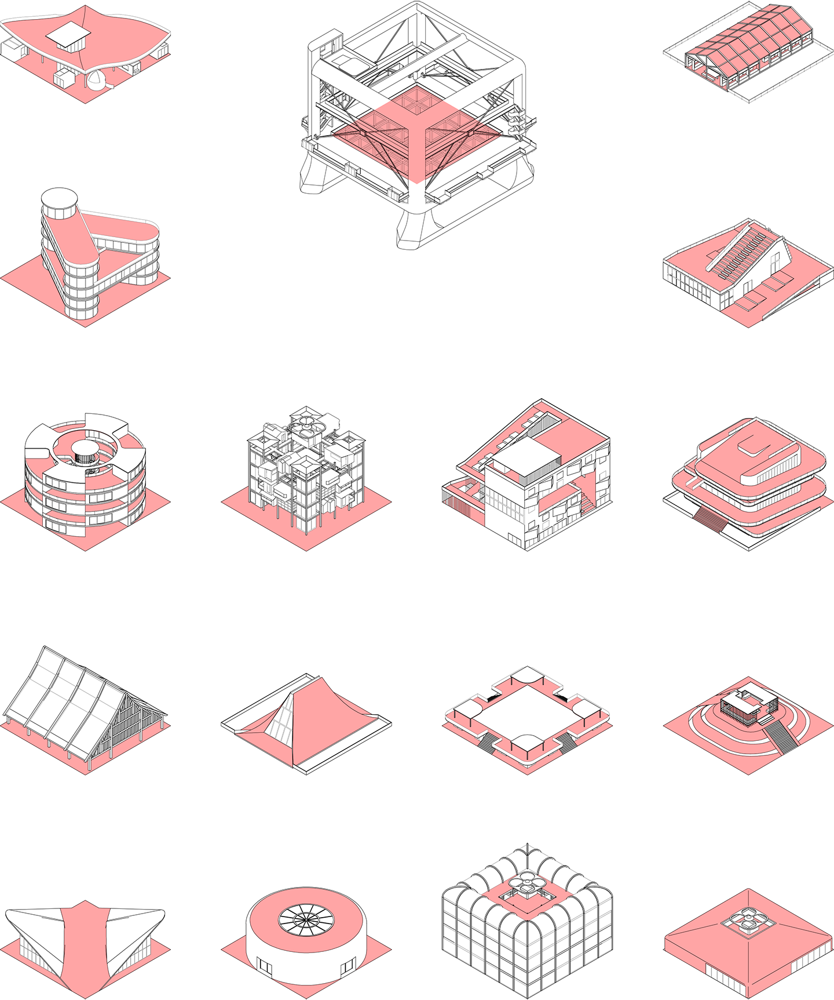

Nomadic Paradise: Chasing the Flooded Pasts
Nomadic paradise is a VR-enabled interactive architectural fiction to be hosted online and at relevant art events.
The project speculates future coastal migrations under extreme sea-level rises, where nomads of an aquatic generation roam across
seas and build floating paradises based on their imaginary homeland. When entering the first-person VR scene, audiences will find
themselves on a nomad unit: a floating architectural printer that can build inhabitable structures from coral extractions and
sea sand. The audiences can navigate the unit in search of extractable materials, print various designs to program their unit,
and dock with other units to shape a nomadic paradise on a journey for the unreachable homeland of the flooded pasts. Depending on the routes of choice,
this interactive VR journey may encounter ruins of insular towns, extreme weathers with tsunamis, and some random paradises with architectural prints
imitating the flooded landmarks of Miami, Lagos, Shanghai, Dhaka, and Tokyo.
The project is part of my developing art genre of architectural fiction that takes speculative design to address challenges, raise
awareness, and provoke discussion on the risks and uncertainties of contemporary human conditions. It is expected to launch by the
end of 2022, both online with mobile and desktop access supported by Web-VR and for public display at art events with VR devices
available. In addition, I plan to push the idea further into a multiplayer gaming experience of post-sea-level-rise scenarios that
could draw broader public engagement on the technological and environmental agendas between humanity and our planet.
While the project is in an early stage of development, you can check out the Web-VR mockup scene below by moving/tapping on your phone
or dragging/ clicking on desktop.
Concept Design




Haoyu Wang is an architect and urbanist based in SF Bay Area.
He is interested in pushing a artistic genre of architectural fiction that
renders unreal tomorrows to inform today's challenges.